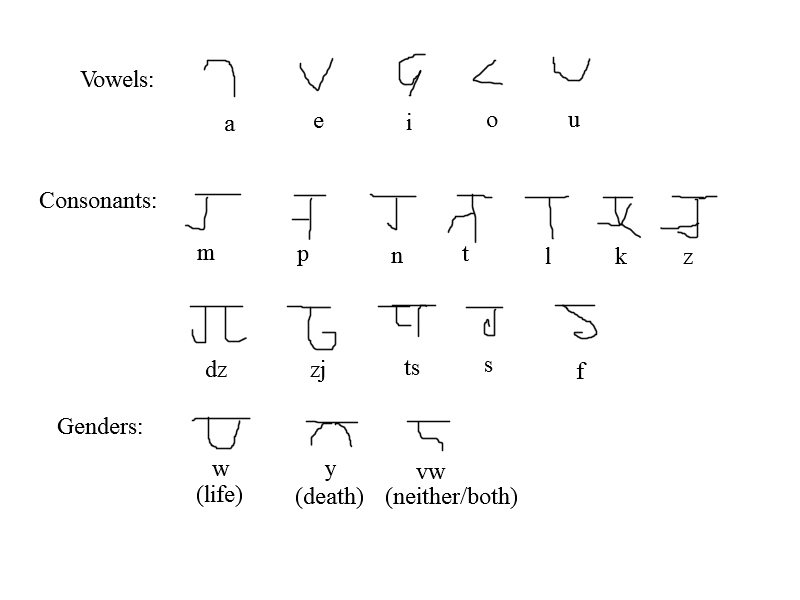

The world of Aedrenna was designed around the rules of Dungeons & Dragons 5th edition. As a result, it contains a multitude of fantasy staples carried over from Dungeons & Dragons, but frequently with changes made to address offensive design choices or choices I generally just disagreed with. It has also been informed by my study of history, and as a result there exists severalseveralparallels between its history and our own. The world of Aedrenna itself is one in decline, two devastating global wars in recent history have left the population drastically decreased, and the culmination of the most recent war has shunted away the divine and the arcane, leaving magic a scarce resource. The year is 1936, and the international system of trade has mostly collapsed, with many nations either ceasing to exist as a result of the wars or left on the brink of collapse in its wake, the future seems bleak, but hope remains.
A rough map of Aedrenna.
The founding myth of Aedrenna tells the story of a great serpent that coils endlessly in a far away void, in the center of this great serpent's coils lies Aedrenna, all its planes, and all its peoples, the product of the great serpent dreaming. Early on in Aedrenna's history, the great serpent dreamt of two gods of destruction and creation, Iunid and Iunor, and a humanoid species capable of adaptation to any environment. Known as the meldiates, these humanoids were essentially a blank canvas, and they quickly spread out and adapted to every corner of Aedrenna's three continents.
Sometime after this original population of the world, the majority of the gods of Aedrenna appeared. Like most settings for Dungeons & Dragons, Aedrenna possesses a pantheon, however, Aedrenna's gods are alien to its world, and the pantheon is divided into two sections, the factions of an ancient war from another world. With them came the celestials and the infernals, and the gods created new planes of existence, the outer planes.
This original era of creation defined the future course of Aedrenna as one embroiled in an endless cosmological war, but in recent history this war has twice spilled into the Prime Material Plane, in what were known as the Tymyradic Wars, named after the foremost leader of the demonic invasion. The First Tymyradic War, from 1659 to 1763, began in an era of sword-and-shield warfare, and ended with early firearms being employed and the demonic incursion being driven back through the portals. A period of peace and relative stability followed until the Second Tymyradic War began in 1802. Lasting until 1923, this war saw the invention of modern, industrialized warfare, and took the global population from a height of 1.24 billion down to 237 million. The continent of Kainos became a bloodbath, and the culmination of the war saw a superweapon constructed on the continent being fired to shove the outer planes beyond the reach of the Prime Material Plane. The weapon worked, and the gates to the Pit and the Abyss, the sources of the demonic invasion, were closed, but the continent of Kainos was shattered into five pieces, and the once-industrial landmass was sent back into an era of quarreling petty kingdoms and royal dynasties.
The modern era now finds the three continents on different levels of technological progress. The age of sail is still in full bloom on Lyura, the industrial revolutions have occurred in full force on Atenua, and Kainos, as mentioned before, has been dragged back to the feudal era
Also, in the creation of Aedrenna, I toyed around with the idea of making a language for the setting. I created the base for the language, known as Aedic, and a couple dozen words, but never really went beyond that. Still though, it exists as a proof of concept for how in-depth worldbuilding can go, and it was a worthwhile creative exercise. Below are images showcasing the language.
